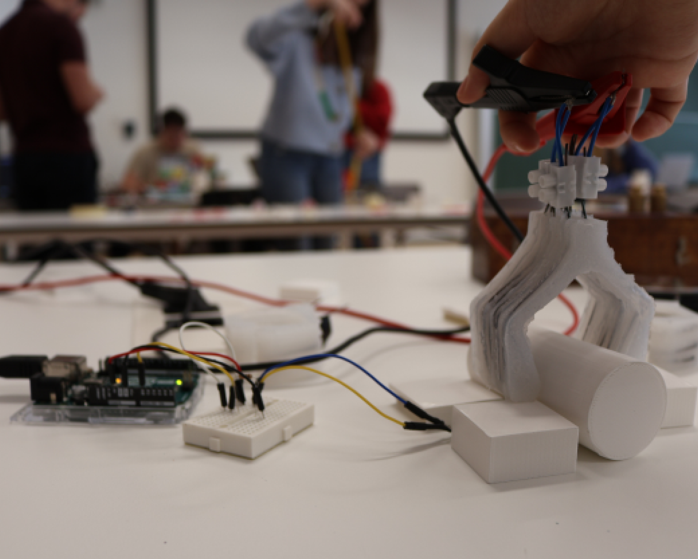

SMA 软体机器人夹爪
基于形状记忆合金与硅胶的新型软体夹爪——集成压敏反馈的自适应抓取
Date
2024
Duration
3 months
Category
Interactive Robot
Tools
Arduino, Rhino / Grasshopper, SMA, Python
Team
Group Project
Concept
SMA (Shape-Memory Alloy) 是一种在特定温度下恢复记忆形态的新材料。我们将 SMA 丝嵌入硅胶结构中，通过通电加热驱动夹爪弯曲，实现柔性抓取。后续集成压敏传感器，通过力反馈实时调整电压，防止 SMA 过热疲劳。
Fabrication

Sensing & Control
压敏传感器（FSR）接入 Arduino，实时检测夹爪抓取力度。Python 脚本根据传感器读数动态调节 SMA 加热电压——力度达到阈值时自动降压，实现闭环控制。